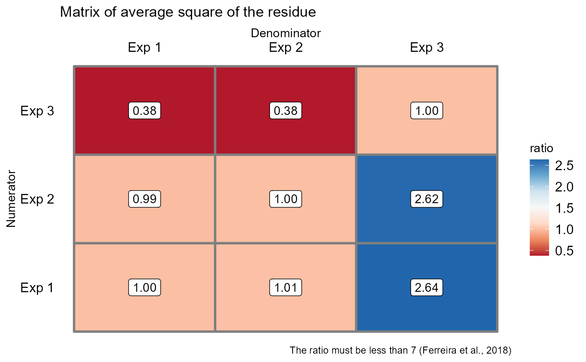

conjdbc.RdFunction of the AgroR package for joint analysis of experiments conducted in a randomized qualitative or quantitative single-block design with balanced data.
conjdbc( trat, block, local, response, transf = 1, norm = "sw", homog = "bt", theme = theme_classic(), mcomp = "tukey", quali = TRUE, alpha.f = 0.05, alpha.t = 0.05, grau = NA, ylab = "response", title = "", xlab = "", fill = "lightblue", angulo = 0, textsize = 12, dec = 3, family = "sans", errorbar = TRUE )
| trat | Numerical or complex vector with treatments |
|---|---|
| block | Numerical or complex vector with blocks |
| local | Numeric or complex vector with locations or times |
| response | Numerical vector containing the response of the experiment. |
| transf | Applies data transformation (default is 1; for log consider 0) |
| norm | Error normality test (default is Shapiro-Wilk) |
| homog | Homogeneity test of variances (default is Bartlett) |
| theme | ggplot2 theme (default is theme_classic()) |
| mcomp | Multiple comparison test (Tukey (default), LSD, Scott-Knott and Duncan) |
| quali | Defines whether the factor is quantitative or qualitative (default is qualitative) |
| alpha.f | Level of significance of the F test (default is 0.05) |
| alpha.t | Significance level of the multiple comparison test (default is 0.05) |
| grau | Degree of polynomial in case of quantitative factor (default is 1) |
| ylab | Variable response name (Accepts the expression() function) |
| title | Graph title |
| xlab | Treatments name (Accepts the expression() function) |
| fill | Defines chart color (to generate different colors for different treatments, define fill = "trat") |
| angulo | x-axis scale text rotation |
| textsize | Font size |
| dec | Number of cells |
| family | Font family |
| errorbar | Plot the standard deviation bar on the graph (In the case of a segment and column graph) - default is TRUE |
Returns the assumptions of the analysis of variance, the assumption of the joint analysis by means of a QMres ratio matrix, the analysis of variance, the multiple comparison test or regression.
The ordering of the graph is according to the sequence in which the factor levels are arranged in the data sheet. The bars of the column and segment graphs are standard deviation.
In the final output when transformation (transf argument) is different from 1, the columns resp and respo in the mean test are returned, indicating transformed and non-transformed mean, respectively.
Ferreira, P. V. Estatistica experimental aplicada a agronomia. Edufal, 2018.
Principles and procedures of statistics a biometrical approach Steel, Torry and Dickey. Third Edition 1997
Multiple comparisons theory and methods. Departament of statistics the Ohio State University. USA, 1996. Jason C. Hsu. Chapman Hall/CRC.
Practical Nonparametrics Statistics. W.J. Conover, 1999
Ramalho M.A.P., Ferreira D.F., Oliveira A.C. 2000. Experimentacao em Genetica e Melhoramento de Plantas. Editora UFLA.
Scott R.J., Knott M. 1974. A cluster analysis method for grouping mans in the analysis of variance. Biometrics, 30, 507-512.
Gabriel Danilo Shimizu, shimizu@uel.br
Leandro Simoes Azeredo Goncalves
Rodrigo Yudi Palhaci Marubayashi
#> #> #>#> #> #>conjdbc(trat, bloco, exp, resp)#> Warning: Error() model is singular#> #> ----------------------------------------------------------------- #> Normality of errors #> ----------------------------------------------------------------- #> Method Statistic p.value #> Shapiro-Wilk normality test(W) 0.9812789 0.7876433 #> #> As the calculated p-value is greater than the 5% significance level, hypothesis H0 is not rejected. Therefore, errors can be considered normal #> ----------------------------------------------------------------- #> Homogeneity of Variances #> ----------------------------------------------------------------- #> Method Statistic p.value #> Bartlett test(Bartlett's K-squared) 1.094921 0.5784169 #> #> As the calculated p-value is greater than the 5% significance level, hypothesis H0 is not rejected. Therefore, the variances can be considered homogeneous #> ----------------------------------------------------------------- #> Independence from errors #> ----------------------------------------------------------------- #> Method Statistic p.value #> Durbin-Watson test(DW) 2.377661 0.4700462 #> #> As the calculated p-value is greater than the 5% significance level, hypothesis H0 is not rejected. Therefore, errors can be considered independent #> ----------------------------------------------------------------- #> Test Homogeneity of experiments #> ----------------------------------------------------------------- #> [1] 5.481481 #> #> Based on the analysis of variance and homogeneity of experiments, it can be concluded that:#> The experiments can be analyzed together#> #>#> #> ----------------------------------------------------------------- #> Analysis of variance #> ----------------------------------------------------------------- #> Df Sum Sq Mean Sq F value Pr(>F) #> Trat 2 14434.7222 7217.36111 45.9867257 0.001737072 #> Exp 2 4809.7222 2404.86111 15.3230088 0.013329484 #> Block/Local 6 362.5000 60.41667 0.3849558 0.857661006 #> Exp:Trat 4 627.7778 156.94444 0.7730901 0.556825561 #> Average residue 21 4263.1944 203.00926 #> #> ----------------------------------------------------------------- #> Multiple comparison test ( tukey ) #> ----------------------------------------------------------------- #> resp groups #> 18 72.91667 a #> 12 68.33333 a #> 6 28.33333 b